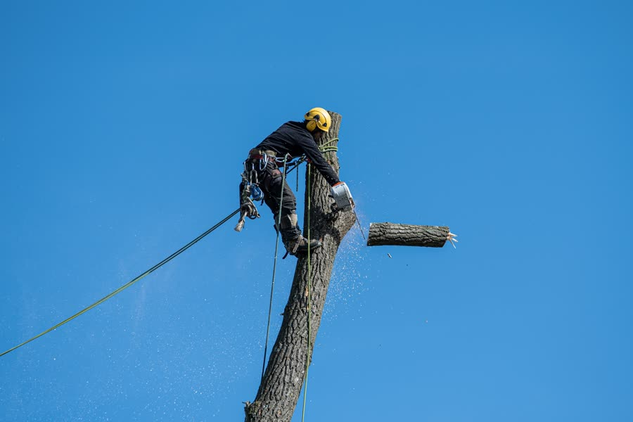
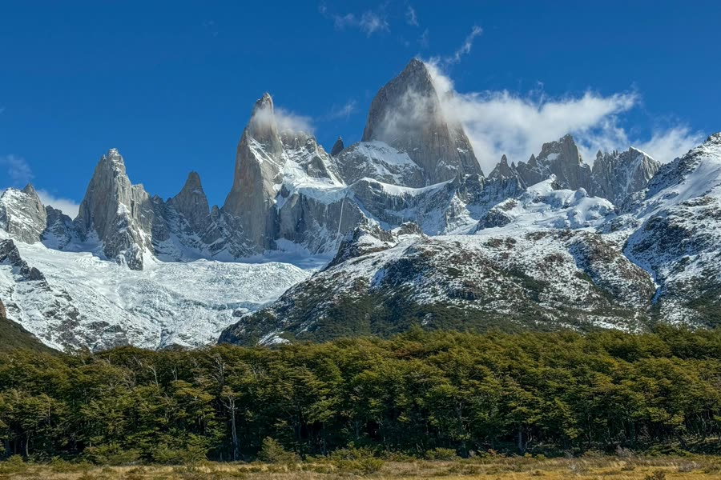

Poda en altura
Poda de formación, aclareo y despeje en árboles altos, con técnicas de escalada y descenso de ramas.
Poda alta, extracción de árboles de gran porte y jardinería. Trabajamos con cuerdas, bajamos cada rama controlada y dejamos todo limpio.

Los árboles grandes no se tumban de cualquier manera. Subimos con equipo de escalada, cortamos por secciones y bajamos cada parte con sogas, sin riesgo para tu casa, los cables ni tus plantas.
Consultar mi casoDel árbol más alto al cantero más chico. Todo con la misma prolijidad y limpieza al terminar.
Poda de formación, aclareo y despeje en árboles altos, con técnicas de escalada y descenso de ramas.
Tala y extracción de ejemplares de gran porte, incluso en espacios reducidos o cerca de construcciones.
Poda de cercos, arbustos y árboles medianos para mantener tu verde sano y bajo control todo el año.
Diseño, plantación y puesta en valor de jardines y parques. Te armamos el verde y lo dejamos andando.
Chipeo, juntado y retiro de ramas y troncos. Te dejamos el terreno despejado y listo para usar.
¿Se cayó o quebró un árbol? Vamos a despejar y asegurar la zona lo antes posible.
Cada trabajo sigue los mismos pasos. Sabés de antemano qué va a pasar y cómo queda tu lugar.
Vamos, miramos el ejemplar y el entorno, y te pasamos un presupuesto claro y sin compromiso.
Instalamos el equipo de escalada y los puntos de anclaje. Seguridad para el equipo y para tu propiedad.
Podamos o desarmamos el árbol por secciones, bajando cada rama con soga. Nada cae por las suyas.
Chipeamos, juntamos y retiramos todo. Te entregamos el lugar despejado y listo para disfrutar.
Llegamos a toda la zona de Sierras Chicas y a Córdoba Capital. Si tu localidad no está en la lista, escribinos igual y lo vemos.

José Ochoa & hijos es un emprendimiento familiar. Tratamos cada árbol y cada jardín como si fuera el nuestro.
Contanos qué necesitás y te pasamos un presupuesto sin compromiso. Atendemos toda la zona de Sierras Chicas y Córdoba Capital.
Pedir presupuesto por WhatsApp